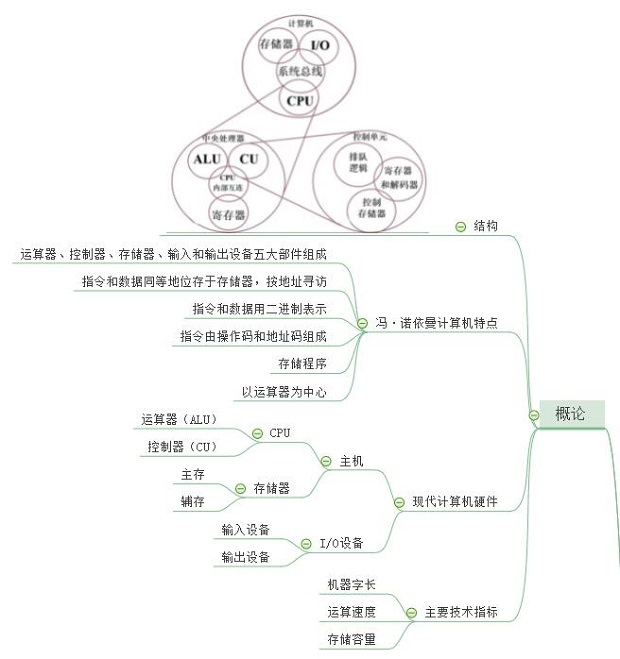
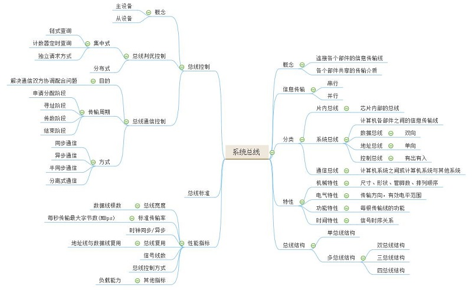

计算机组成原理-整理
第一章：计算机系统概论
-
知识框架
- 
- 冯·诺依曼计算机的特点
- 1.计算机由运算器，控制器，存储器，输入和输出设备五大部件组成
- 2.指令和数据以同等地位存放于存储器内，并可按地址寻访
- 3.指令和数据均用二进制码表示
- 4.指令由操作码和地址码组成，操作码用来表示操作的性质，地址码用来表示操作数所在存储器中的位置
- 5.指令在存储器内按顺序存放
- 6.机器以运算器为中心
- 高级语言、汇编语言和机器语言的差别及联系
- 一、指代不同
- 高级语言：相对于机器语言是一种指令集的体系
- 汇编语言：是一种用于电子计算机、微处理器、微控制器或其他可编程器件的低级语言
- 机器语言：不经翻译即可为机器直接理解和接受的程序语言或指令代码
- 二、编码方式不同
- 高级语言：语法和结构更类似汉字或者普通英文，且由于远离对硬件的直接操作，使得一般人更容易学习
- 汇编语言：汇编语言对应着不同的机器语言指令集，通过汇编过程转换成机器指令。特定的汇编语言和特定的机器语言指令集是一一对应的，不同平台之间不可直接移植
- 机器语言：使用绝对地址和绝对操作码。不同的计算机都有各自的机器语言，即指令系统。从使用的角度看，机器语言是最低级的语言
- 特点不同
- 高级语言：高级编程语拥有很多函数库，用户可以根据自身的需求在代码中加入头文件来调用这些函数来实现自己的功能
- 汇编语言：用助记符代替机器指令的操作码，用地址符号或标号代替指令或操作数的地址
- 机器语言：指令是一种二进制代码，由操作码和操作数两部分组成。操作码规定了指令的操作，是指令中的关键字，不能缺省。操作数表示该指令的操作对象
第三章：系统总线
-
知识框架
- 
- 常用的总线结构
- 总线结构通常可以分为单总线结构和多总线结构
- 单总线结构：简单，便于扩充，但所有的传送都通过这组共享总线，因此极易形成计算机系统的瓶颈。 它也不允许两个以上的部件在同一时刻向总线传输信息，影响工作效率。 这类总线多用于小型计算机或微型计算机。
- 多总线结构：解决了单总线所有部件同时共享总线的现状，有效的提高了系统的工作效率，如传统微型计算机
- 同步通信和异步通信
- 同步通信：指由统一时钟控制的通信，控制方式简单，灵活性差，当系统中各部件工作速度差异较大时，总线工作效率明显下降
- 异步通信：指没有统一时钟控制的通信，部件间采用应答方式进行联系，控制方式较同步复杂，灵活性高，当系统中各部件工作速度差异较大时，有利于提高总线工作效率
- 系统总线
- 数据总线：各个功能部件之间传送数据信息，双向传输
- 地址总线：用来指明数据总线上，源数据或目的数据所在的主存单元的地址
- 控制总线：用来发送各种控制信号。对于控制总线中的单根线，是单向的，即只能由一个部件发向另一个部件
第四章：存储器

- 存储器的层次结构
- 存储器的层次结构体现在缓存-主存层次和主存-辅存层次
- 缓存-主存：为了解决CPU和主存速度不匹配的问题，使CPU访存速度加快，接近于缓存速度，寻址空间更接近主存； 主存-辅存：主要起扩容作用，使容量更接近辅存，速度更接近主存
- 存储器按存取方式分类
- 可以分为随机存储器、只读存储器、顺序存储器和直接存储器
- 随机存储器和只读存储器属于随机存储器，即存取时间与物理地址无关
- 顺序存储器（典型的如磁带）和直接存储器（典型的如磁盘）属于串行存储器，即存取时间与物理地址有关

- 提高访存速度的措施
- 调整主存结构—单体多字、多体并行
- 采用高速器件
- 采用层次结构 Cache –主存

- Cache映射方式
- 直接映射、全相联映射、组相联映射
- 直接映射：优点：地址变换速度快。缺点：cache利用率不高，块冲突率高
- 全相联映射：cache利用率高，块冲突率低。缺点：地址变换复杂，需要较多的硬件
一.概述
二.主存储器
三.高速缓冲存储器
第五章：输入输出系统
- I/O系统的发展
- 1）早期（分散连接、串行工作、程序查询）
- 2）接口模块和DMA阶段（总线连接、并行工作、中断及DMA）
- 3）通道阶段（通道是具有特殊功能的处理器）
- 4）I/O处理机阶段
- I/O系统的发展实际上是逐步将CPU从繁重的I/O工作中解放出来的过程；
- I/O设备编址方式
- (1) 统一编址：把I/O地址看做存储器地址的一部分，用取数、存数指令
- (2) 不统一编址：有专门的 I/O 指令
- I/O联络方式
- (1)立即响应：速度十分缓慢的设备，无需特殊联系信号，只要CPU的I/O指令到，立即响应
- (2)异步工作采用应答信号:I/O设备与主机四度不匹配时，常采用异步工作方式
- (3)同步工作采用同步时标：要求I/O设备和CPU速度完全同步
- 为什么要设置接口
- 1.实现设备的选择
- 2.实现数据缓冲达到速度匹配
- 3.实现数据串-并格式转换
- 4.实现电平转换
- 5.传送控制命令
- 6.反映设备的状态（“忙”、“就绪”、“中断请求”）
- 程序流程
- 1）由于这种传送方式要占用CPU中的寄存器，故要保存寄存器内容
- 2）由于传送往往是一批数据，因此需先设置I/O设备与主机交换数据的计数器
- 3）设置欲传送数据在主存缓冲区的首地址
- 4）CPU启动I/O设备
- 5）将I/O接口中的设备状态标志取到CPU测试是否准备好。
- 中断
- 计算机在执行程序过程中，当出现异常清空或特殊请求时，计算机停止现行程序的运行， 转去处理这些异常清空或特殊请求，处理结束后，再返回现行程序的间断处，继续执行原程序，即为中断
- 中断服务程序的基本流程
- 1）保护现场
- 2）中断服务
- 3）恢复现场
- 4）中断返回
- 单重中断和多重中断
- 单重中断：不允许中断现行的中断服务程序
- 多重中断：允许级别更高的中断源中断现行的中断服务程序，也称为中断嵌套
- DMA与主存交换数据的三种方式
- (1)停止 CPU 访问主存
- (2)周期挪用（或周期窃取）
- (3)DMA 与 CPU 交替访问
- DMA 接口功能
- (1)向CPU申请DMA传送
- (2)处理总线控制权的转交
- (3)管理系统总线、控制数据传送
- (4)确定数据传送的首地址和长度—以块为单位传输
- (5)DMA传送结束时，给出操作完成信号—每传输完一个数据块，中断一次，做DMA后处理
- DMA传送过程
- (1)预处理
- (2)数据传送
- (3)后处理
一.概述
二.外部设备
三.I/O接口
四.程序查询方式
五.程序中断方式
六.DMA方式
第六章：计算机的运算方法
-
知识框架

- 机器零
- 当浮点数尾数为0时，不论其阶码为何值，按机器零处理
- 当浮点数阶码等于或小于它所表示的最小数时，不论尾数为何值，按机器零处理
第七章：指令系统

- 操作码
- 反映机器做什么操作，如加减、传送、移位、转移等
- (1) 长度固定：将操作码集中放在指令字的一个字段内。 这种格式便于硬件实现，指令译码时间短，广泛用于字长较长的大中型机器中和超小型机器及RISC(精简指令集机器）中。
- (2) 长度可变：操作码分散在指令字的不同字段中
- 寻址方式
- 指令寻址
- 数据寻址
- 1. 立即寻址
- 形式地址 A 就是操作数
- 指令执行阶段不访存,取出指令便立即获得操作数
- A 的位数限制了立即数的范围
- 2. 直接寻址
- EA = A有效地址由形式地址直接给出
- 寻找操作数简单，不需要专门计算操作数地址
- 执行阶段访问一次存储器
- A 的位数决定了该指令操作数的寻址范围
- 操作数的地址不易修改（必须修改A）
- 3. 隐含寻址
- 操作数地址隐含在操作码中
- 4. 间接寻址
- EA =（A）有效地址由形式地址间接提供
- 执行指令阶段2次访存
- 可扩大寻址范围；便于编制程序
- 5. 寄存器寻址
- EA = Ri，有效地址即为寄存器编号
- 执行阶段不访存，只访问寄存器，执行速度快
- 地址字段只需指明寄存器的编号（机器中寄存器个数有限）可缩短指令字长，节省存储空间。
- 6. 寄存器间接寻址
- EA = ( Ri )，有效地址在寄存器中
- 有效地址在寄存器中， 操作数在存储器中，执行阶段访存
- 便于编制循环程序
- 7. 基址寻址
- (1) 采用专用寄存器作基址寄存器BR（隐式）
- EA = ( BR ) + A，BR 为基址寄存器
- 可扩大寻址范围：BR位数可大于A的位数
- 有利于多道程序
- (2) 采用通用寄存器作基址寄存器
- 由用户指定哪个通用寄存器作为基址寄存器
- 在程序的执行过程中 R0 内容不变，形式地址 A 可变
- 8. 变址寻址--1
- （1）采用专用寄存器IX 为变址寄存器
- EA = ( IX ) +A，通用寄存器也可以作为变址寄存器
- 可扩大寻址范围，IX 的内容由用户给定
- 在程序的执行过程中 IX 内容可变，形式地址 A 不变
- 便于处理数组问题
- 变址寻址还可以与其它寻址方式结合。
- 9. 相对寻址
- EA = ( PC ) + A，A 是相对于当前指令的位移量（可正可负，补码）
- A 的位数决定操作数的寻址范围
- 广泛用于转移指令，EA指向转移后的目标地址
- 10. 堆栈寻址
- 堆栈寻址可视为一种隐含寻址，其操作数的地址总被隐含在SP中。
- 堆栈寻址就其本质来讲也可视为寄存器间接寻址，因为SP可视为寄存器，它存放着操作数的有效地址

- RISC 的主要特征
- 选用使用频度较高的一些 简单指令，复杂指令的功能由简单指令来组合
- 指令长度固定、指令格式种类少、寻址方式少
- 只有LOAD/STORE指令访存
- CPU中有多个通用寄存器
- 采用流水技术一个时钟周期内完成一条指令
- 采用组合逻辑实现控制器
- 采用优化的编译程序
- CISC 的主要特征
- 系统指令复杂庞大，各种指令使用频度相差大
- 指令长度不固定、指令格式种类多、寻址方式多
- 访存指令不受限制
- CPU中设有专用寄存器
- 大多数指令需要多个时钟周期执行完毕
- 采用微程序控制器
- 难以用优化编译生成高效的目的代码
- RISC和CISC 的比较
- 1.RISC更能充分利用VLSI芯片的面积
- 2.RISC更能提高计算机运算速度
- 3.RISC便于设计，可降低成本，提高可靠性
- 4.RISC有利于编译程序代码优化
- 5.RISC不易实现指令系统兼容
一.机器指令
二.操作数类型和操作类型
三.寻址方式
四.指令格式举例
五.RISC技术
第八章：CPU的结构和功能
- CPU 的功能
- 1.控制器的功能
- 取指令：能自动从存储器中取出指令，为此控制器必须能自动形成指令的地址，并能发出取指的命令。
- 分析指令：一是分析指令要完成的操作；二是分析参与操作的操作数地址，即有效地址
- 执行指令：根据“操作命令”和“操作数地址”发出各种操作命令
- 控制程序输入及结果的输出
- 总线管理
- 处理异常情况和特殊请求
- 2.运算器的功能
- 实现算术运算和逻辑运算
- 概念
- 取出并执行一条指令所需的全部时间

- 如何提高机器速度
- 1.提高访存速度
- 2.提高 I/O 和主机之间的传送速度
- 3.提高运算器速度
- 4.提高整机处理能力
- 旁路技术
- 其主要思想是不必等某条指令的执行结果送回到寄存器后再从寄存器中取该结果作为下一条指令的源操作数， 而是直接将执行结果送到其它指令所需要的地方
- 中断
- 中断：是指CPU在正常运行程序时，由于内部/外部事件(或由程序)引起CPU中断正在运行的程序， 而转到为中断事件服务的程序中去，服务完毕，再返回执行原程序
- 中断系统需解决的问题：
- (1)各中断源如何向CPU 提出请求
- (2)各中断源同时提出请求怎么办
- (3)CPU什么条件、什么时间、以什么方式响应中断
- (4)如何保护现场
- (5)如何寻找入口地址
- (6)如何恢复现场，如何返回
- (7)处理中断的过程中又出现新的中断怎么办
一.CPU的结构
二.指令周期
三.指令流水
四.中断系统
第九章：控制单元的功能
-
知识框架

- 完成一条指令分 4 个工作周期
- 取指周期
PC->MAR->地址线 1->R M(MAR)->MDR MDR->IR OP(IR)->CU (PC)+1->PC
- 间址周期
Ad(IR)->MAR 1->R M(MAR)->MDR MDR->Ad(IR)
- 执行周期
- 以访存指令为例
- 1.加法指令 ADD X
Ad(IR)->MAR 1->R M(MAR)->MDR (ACC)+(MDR)->ACC
- 2.存数指令 STA X
Ad(IR)->MAR 1->W ACC->MDR MDR->M(MAR)
- 3.取数指令 LDA X
Ad(IR)->MAR 1->R ACC->MDR MDR->ACC
- 中断周期
0->MAR 1->W PC->MDR MDR->M(MAR) M->PC 0->EINT
第十章：控制单元的设计
- 基本概念
- 微命令：控制部件通过控制线向执行部件发出的各种控制命令。
- 微操作：执行部件接受命令后所进行的操作。微操作是执行部件的基本操作，分为相容性和相斥性两种
- 微指令：一组实现一定操作功能的微命令的组合。一般微指令格式由操作控制和顺序控制两部分组成。 其操作控制部分产生各种控制信号，顺序控制部分产生下一条微指令的地址
- 机器指令：由许多微指令组成的序列，即微程序
- 安排微操作时序的原则
- 原则一:微操作的先后顺序不得随意更改
- 原则二:被控对象不同的微操作,尽量安排在一个节拍内完成
- 原则三：占用时间较短的微操作，尽量安排在一个节拍内完成， 且允许有先后顺序